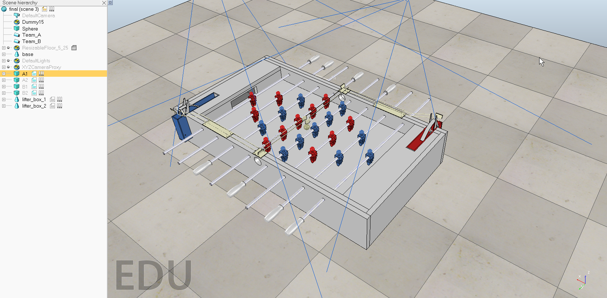

threadFunction=function()
while sim.getSimulationState()~=sim.simulation_advancing_abouttostop do
-- Read the keyboard messages (make sure the focus is on the main window, scene view):
message,auxiliaryData=sim.getSimulatorMessage()
while message~=-1 do
if (message==sim.message_keypress) then
if (auxiliaryData[1]==119) then
-- up key
velocity=100
torque=200
hammer_back = 0
end
if (auxiliaryData[1]==115) then
-- down key
hammer_back = 1
torque=-200
velocity = -100
end
if (auxiliaryData[1]==97) then
-- right key
sliding = sliding + 0.005
sliding_1 = sliding_1 + 0.005
end
if (auxiliaryData[1]==100) then
-- left key
sliding = sliding - 0.005
sliding_1 = sliding_1 - 0.005
end
if (sliding < -0.0445) then
sliding = -0.0445
elseif (sliding > 0.0445) then
sliding = 0.0445
end
if (sliding_1 < -0.08255) then
sliding_1 = -0.08255
elseif (sliding_1 > 0.08255) then
sliding_1 = 0.08255
end
end
message,auxiliaryData=sim.getSimulatorMessage()
end
-- We take care of setting the desired hammer position:
if hammer_back == 1
then
sim.setJointPosition(joint, -1, orientation)
sim.setJointPosition(joint_1, -1, orientation)
--sim.setObjectPosition(hammer, -1, position)
end
sim.setJointTargetPosition(joint, velocity)
sim.setJointTargetPosition(joint_1, velocity)
--sim.setJointForce(joint,torque)
sim.setJointTargetPosition(slider, sliding)
sim.setJointTargetPosition(slider_1, sliding_1)
-- Since this script is threaded, don't waste time here:
sim.switchThread() -- Resume the script at next simulation loop start
end
end
-- Put some initialization code here:
-- Retrieving of some handles and setting of some initial values:
joint=sim.getObjectHandle('A1_1_joint')
hammer=sim.getObjectHandle('A1_1_player')
slider=sim.getObjectHandle("A1_1_slider")
joint_1=sim.getObjectHandle('A1_2_joint')
hammer_1=sim.getObjectHandle('A1_2_player')
slider_1=sim.getObjectHandle("A1_2_slider")
velocity=0
hammer_back=0
torque=0
sliding = 0
sliding_1 = 0
orientation=sim.getJointPosition(joint, -1)
position=sim.getObjectPosition(hammer, -1)
slider_position=sim.getJointPosition(slider, -1)
-- Here we execute the regular thread code:
res,err=xpcall(threadFunction,function(err) return debug.traceback(err) end)
if not res then
sim.addStatusbarMessage('Lua runtime error: '..err)
end